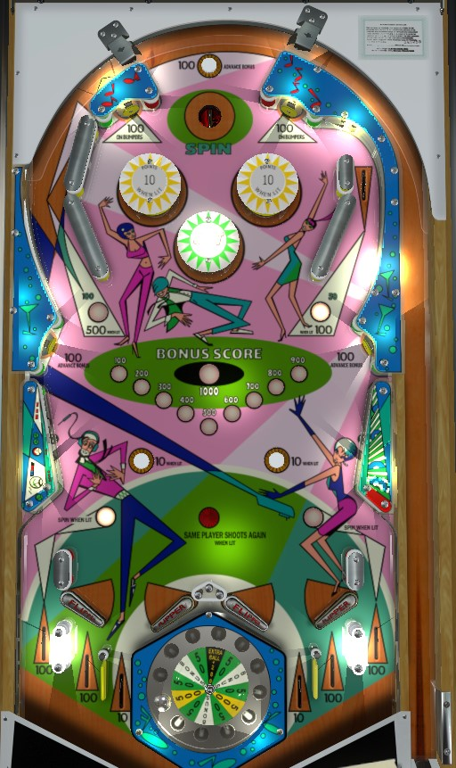

Shoot to the top of the table via the orbits with the goal of landing in the Spin saucer as much as possible to earn medium points, big points, or an extra ball.
Spin the roulette wheel set into the table by making the top saucer at any time, or by making a lit out lane, which alternates on every 1-point switch hit. The roulette wheel has 12 possible positions: 6 that score 50 points, 2 that score 500 points, 1 that scores 200 points and an extra ball, and 3 that score Bonus. The Bonus is a pseudo-jackpot shown on the middle of the playfield; the top rollover button and side standup targets score 100 points and add 100 points to the Bonus. The Bonus value is held across players and games until collected, and resets to 100 once scored.
The center bumper always scores 1 point. The left and right bumpers score 1 point or 10 when lit. The two top standup targets score 100 points and light the left and right bumpers for the rest of the ball.
Left orbit scores 100 points or 500 when lit. Right orbit scores 50 points or 100 when lit. Lit orbits alternate every time 1 point is scored.
A-Go-Go has two separate flipper pairs. The left flipper button controls the left flipper in each pair. Balls can drain via out lanes or a center drain between the flippers in each pair. Out lanes score 100 points and are lit alternately for a roulette spin. The two center out lanes beneath each flipper pair score 10 points (inner) or 100 points (outer).
No end of ball bonus. The Bonus score can only be earned from a roulette spin. Maximum 1 extra ball per ball in play. Tilt ends the ball in play only.